Multivariate CoxPH-Lasso Validation#
Here we will validate the CoxPH-Lasso model on the validation set. We will use the same hyperparameters as the ones found in the previous notebook.
Load Data#
Show code cell source
import pandas as pd
input_path = '../Data/Intermediate_Files/'
output_path = '../Data/Processed_Data/'
# Import functions to clean up clinical data
from source.cox_lasso_functions import *
raw_coefs = pd.read_csv(output_path + 'multivariate_cox_lasso/ewas_cog_os_raw_coefs.csv', index_col=0)
mean_coefs = set_cutoff(coefs=raw_coefs,threshold=0.95)
df_validation = pd.read_pickle(
input_path+'df_validation.pkl')[mean_coefs.index]
validation_clinical_data = pd.read_csv(input_path+'validation_clinical_data.csv',
low_memory=False, index_col=0)
print(
f' Dataset (df) contains {df_validation.shape[1]} columns (5mC nucleotides/probes) and {df_validation.shape[0]} rows (samples).')
Dataset (df) contains 35 columns (5mC nucleotides/probes) and 201 rows (samples).
Transform to M-values#
Show code cell source
import math
import numpy as np
from scipy import stats
import seaborn as sns
import matplotlib.pyplot as plt
def beta2m(val):
'''Transfrom beta-values into m-values'''
return math.log2(val/(1-val))
x_test_m = df_validation.apply(np.vectorize(beta2m))
# Get correlation between Beta and M Values
corr = x_test_m.corrwith(df_validation, axis=0)
# Glue them into same dataframe for vizualization purposes
beta_to_m_values = pd.concat([x_test_m.mean(),df_validation.mean(),corr],axis=1,
keys=['M Values','Beta Values','Correlation'],
join= 'inner')
def draw_scatterplot(df,x,y,hue,s):
# Define theme
sns.set_theme(style="white")
f, ax = plt.subplots(figsize=(6, 6))
sns.despine(f, left=False, bottom=False)
# Define scatterplot
sns.scatterplot(x=x, y=y,
hue=hue, palette='flare', s=s,
sizes=(1, 8), linewidth=0, alpha=0.8,
data=df, ax=ax)
# Calculate Pearson’s correlation coefficient (r)
# and its two-tailed p-value (p)
r,p = stats.pearsonr(df[x],df[y])
# Annotate r and p into the plot
plt.annotate(fr'$\rho$: {r:.5f}, p-value: {p:.5f}',
xy=(6.0, 0.01), xycoords='data',
ha='right', va='center',
bbox={'boxstyle': 'round', 'facecolor': 'none',
'edgecolor': 'lightgray'})
# Define plot specs
plt.xlabel(x)
plt.ylabel(y)
plt.title(r"Concordance by Pearson's correlation coefficient ($\rho$) in " + str(len(df)) + ' CpG probes',
fontsize = 12)
# Save plot figure
# plt.savefig('../Figures/Beta_to_M_Values_' + str(len(df)) + '_scatterplot' + '.png',
# bbox_inches='tight', dpi=300)
return(plt.show())
draw_scatterplot(df=beta_to_m_values,x='M Values',y='Beta Values',hue='Correlation',s=20)

Standardize Data#
Here we will use the same scaler as the one used in the previous notebook (discovery cohort).
Show code cell source
def standardize_data(df, reference_df):
"""Standardize data using mean and standard deviation of reference dataset"""
# Keep only columns that are in both datasets
reference_df = reference_df.loc[:, df.columns]
# Standardize data
df_z = (df - reference_df.mean()) / reference_df.std()
return df_z
# Read top CpGs selected from previous code file (univariate cox-ph EWAS)
ewas_top_cpgs = pd.read_csv(output_path+'ewas_dmr/ewas_top_cpgs.csv', index_col=0)
# Standardize data
x_test_m_z = standardize_data(df= x_test_m, reference_df= ewas_top_cpgs)
Generate Model Results (Rpart by cytogenetic groups)#
Validation dataset#
Show code cell source
validation_clinical_data['Primary Cytogenetic Code'].value_counts(dropna=False)
Primary Cytogenetic Code
Miscell 43
NaN 42
Normal 40
11q23 22
inv (16) 19
t (8;21) 19
t (9;11) 13
Insuff 3
Name: count, dtype: int64
Show code cell source
# Define groups
groups = [['t (8;21)', 'inv (16)'], ['Normal'], ['11q23','t (9;11)' ], ['Miscell', np.nan, 'Insuff']]
cbf_group = validation_clinical_data[validation_clinical_data['Primary Cytogenetic Code'].isin(['t (8;21)','inv (16)'])]
normal_group = validation_clinical_data[validation_clinical_data['Primary Cytogenetic Code'].isin(['Normal'])]
mll_group = validation_clinical_data[validation_clinical_data['Primary Cytogenetic Code'].isin(['11q23','t (9;11)'])]
other_group = validation_clinical_data[validation_clinical_data['Primary Cytogenetic Code'].isin(['Miscell', np.nan, 'Insuff'])]
score_name = 'MethylScore_CoxPH_Rpart_per_group'
cbf_group_copy, threshold = generate_coxph_score(coef_mean=mean_coefs,
x=x_test_m_z.loc[cbf_group.index],
df=cbf_group,
score_name=score_name,
train_test=-0.2243,
rpart_outcome='os.time')
normal_group_copy, threshold = generate_coxph_score(coef_mean=mean_coefs,
x=x_test_m_z.loc[normal_group.index],
df=normal_group,
score_name=score_name,
train_test=-0.2961,
rpart_outcome='os.time')
mll_group_copy, threshold = generate_coxph_score(coef_mean=mean_coefs,
x=x_test_m_z.loc[mll_group.index],
df=mll_group,
score_name=score_name,
train_test=1.0032,
rpart_outcome='os.time')
other_group_copy, threshold = generate_coxph_score(coef_mean=mean_coefs,
x=x_test_m_z.loc[other_group.index],
df=other_group,
score_name=score_name,
train_test=0.3825,
rpart_outcome='os.time')
df_labels2 = pd.concat([cbf_group_copy, normal_group_copy, mll_group_copy, other_group_copy]).sort_index()
Continuous score cut at the value of -0.2243 for ['inv (16)', 't (8;21)']
Continuous score cut at the value of -0.2961 for ['Normal']
Continuous score cut at the value of 1.0032 for ['t (9;11)', '11q23']
Continuous score cut at the value of 0.3825 for ['Miscell', 'Insuff', nan]
Kaplan-Meier Plots#
Show code cell source
# Import Plotting Functions
from source.data_visualization_functions import *
draw_kaplan_meier(scorename=score_name,
df=df_labels2,
save_plot=False,
add_risk_counts=False,
trialname='StJude trials')
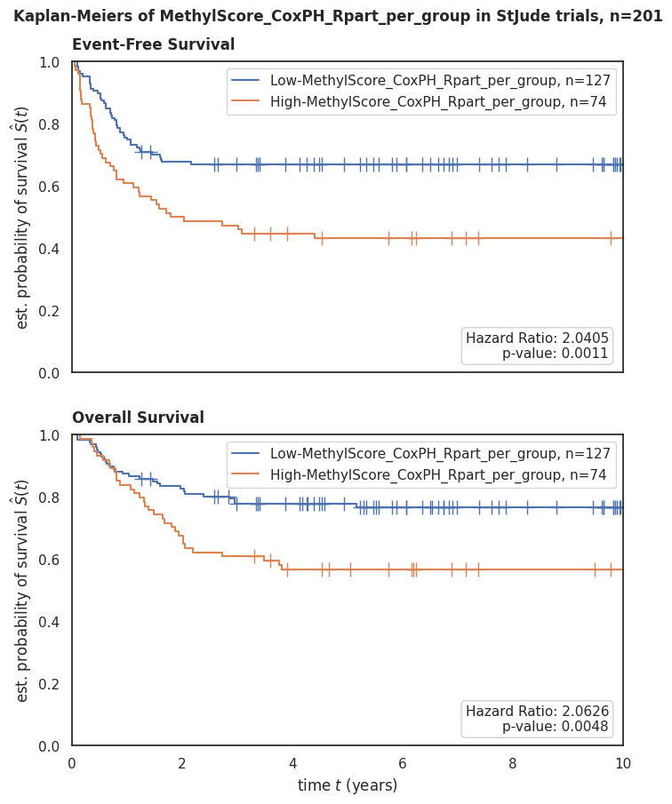
Forest Plots#
Show code cell source
draw_forest_plot(time='os.time',
event='os.evnt',
df=df_labels2,
trialname='StJude trials',
scorename=score_name,
save_plot=False)
draw_forest_plot(time='efs.time',
event='efs.evnt',
df=df_labels2,
trialname='StJude trials',
scorename=score_name,
save_plot=False)
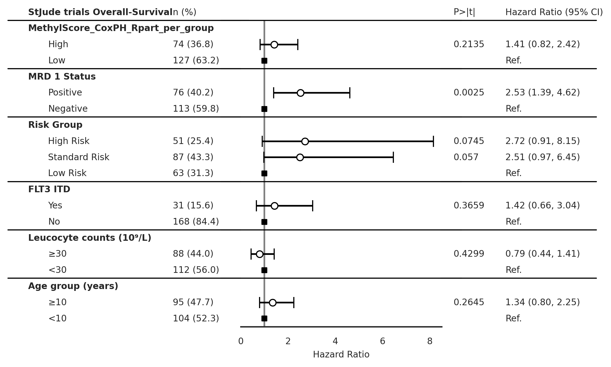
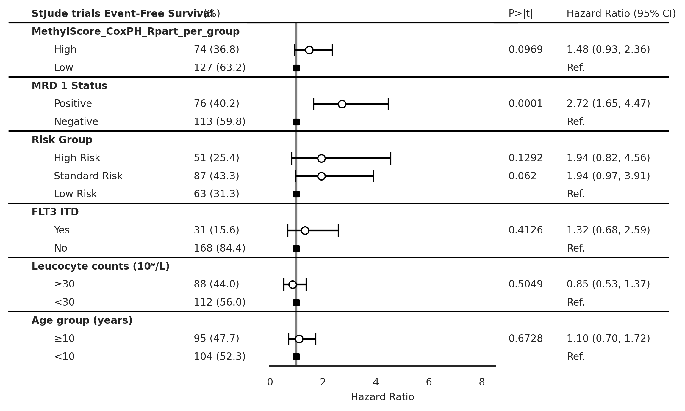
Box Plots#
Show code cell source
draw_boxplot(df=df_labels2,x='Risk Group', y=score_name,
order=['High Risk', 'Standard Risk', 'Low Risk'],
trialname='StJude trials', hue=score_name + ' Categorical',
save_plot=False, figsize=None)
draw_boxplot(df=df_labels2,x='MRD 1 Status', y=score_name,
order=['Positive','Negative'],
trialname='StJude trials', hue=score_name + ' Categorical',
save_plot=False, figsize=None)
draw_boxplot(df=df_labels2,x='Primary Cytogenetic Code', y=score_name,
order='auto',
trialname='StJude trials', hue=score_name + ' Categorical',
save_plot=False, figsize=None)
p-value annotation legend:
ns: p <= 1.00e+00
*: 1.00e-02 < p <= 5.00e-02
**: 1.00e-03 < p <= 1.00e-02
***: 1.00e-04 < p <= 1.00e-03
****: p <= 1.00e-04
High Risk vs. Standard Risk: Kruskal-Wallis independent samples (pairwise between groups) with Bonferroni correction, P_val:3.150e-01 Stat=2.628e+00
Standard Risk vs. Low Risk: Kruskal-Wallis independent samples (pairwise between groups) with Bonferroni correction, P_val:8.551e-11 Stat=4.428e+01
High Risk vs. Low Risk: Kruskal-Wallis independent samples (pairwise between groups) with Bonferroni correction, P_val:2.836e-07 Stat=2.848e+01
p-value annotation legend:
ns: p <= 1.00e+00
*: 1.00e-02 < p <= 5.00e-02
**: 1.00e-03 < p <= 1.00e-02
***: 1.00e-04 < p <= 1.00e-03
****: p <= 1.00e-04
Positive vs. Negative: Kruskal-Wallis independent samples (pairwise between groups) with Bonferroni correction, P_val:1.003e-01 Stat=2.701e+00
Stacked Bar Plots#
Show code cell source
draw_stacked_barplot(df=df_labels2,x='MRD 1 Status', y=score_name,
order=['Positive','Negative'],
trialname='StJude trials', hue=score_name + ' Categorical',
save_plot=False, figsize=None)
draw_stacked_barplot(df=df_labels2,x='Risk Group', y=score_name,
order=['High Risk', 'Standard Risk', 'Low Risk'],
trialname='StJude trials', hue=score_name + ' Categorical',
save_plot=False, figsize=None, fontsize=9)
draw_stacked_barplot(df=df_labels2,x='Primary Cytogenetic Code', y=score_name,
order='auto',
trialname='StJude trials', hue=score_name + ' Categorical',
save_plot=False, figsize=None, fontsize=8)
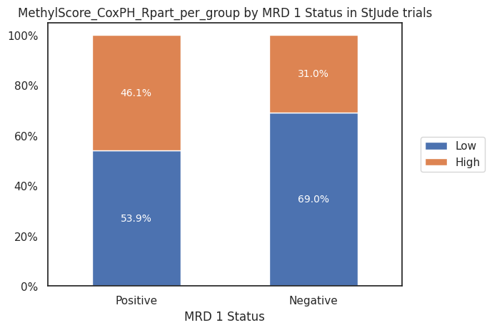
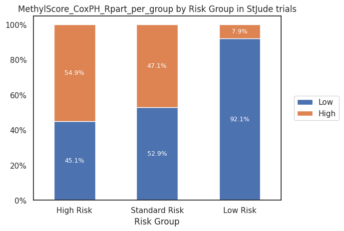
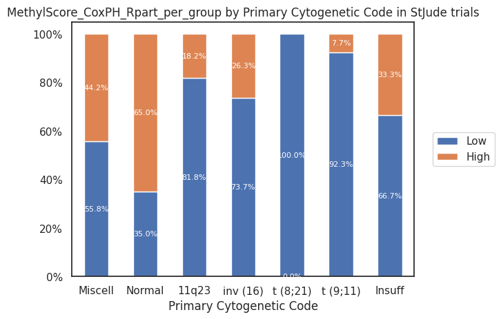
Patient Characteristics Table#
Show code cell source
from tableone import TableOne
columns = ['Age (years)','Age group (years)','Sex','Race or ethnic group',
'Hispanic or Latino ethnic group', 'MRD 1 Status',
'Leucocyte counts (10⁹/L)', 'BM Leukemic blasts (%)',
'Risk Group', 'Clinical Trial','FLT3 ITD']
df_labels2['Age (years)'] = df_labels2['Age (years)'].astype(float)
mytable_cog = TableOne(df_labels2, columns,
overall=False, missing=True,
pval=True, pval_adjust=False,
htest_name=True,dip_test=True,
tukey_test=True, normal_test=True,
order={'FLT3 ITD':['Yes','No'],
'Race or ethnic group':['White','Black or African American','Asian'],
'MRD 1 Status': ['Positive'],
'Risk Group': ['High Risk', 'Standard Risk'],
'FLT3 ITD': ['Yes'],
'Leucocyte counts (10⁹/L)': ['≥30'],
'Age group (years)': ['≥10']},
groupby=score_name + ' Categorical')
mytable_cog.tabulate(tablefmt="html",
headers=[score_name,"",'Missing','High','Low','p-value','Statistical Test'])
| MethylScore_CoxPH_Rpart_per_group | Missing | High | Low | p-value | Statistical Test | |
|---|---|---|---|---|---|---|
| n | 127 | 74 | ||||
| Age (years), mean (SD) | 2 | 8.8 (5.8) | 8.8 (6.4) | 0.971 | Two Sample T-test | |
| Age group (years), n (%) | ≥10 | 2 | 61 (48.4) | 34 (46.6) | 0.918 | Chi-squared |
| <10 | 65 (51.6) | 39 (53.4) | ||||
| Sex, n (%) | Female | 0 | 53 (41.7) | 34 (45.9) | 0.664 | Chi-squared |
| Male | 74 (58.3) | 40 (54.1) | ||||
| Race or ethnic group, n (%) | White | 2 | 92 (73.0) | 51 (69.9) | 0.741 | Chi-squared (warning: expected count < 5) |
| Black or African American | 20 (15.9) | 12 (16.4) | ||||
| Asian | 1 (1.4) | |||||
| Native Hawaiian or other Pacific Islander | 1 (0.8) | 1 (1.4) | ||||
| Other | 13 (10.3) | 8 (11.0) | ||||
| Hispanic or Latino ethnic group, n (%) | Hispanic or Latino | 2 | 15 (11.9) | 10 (13.7) | 0.884 | Chi-squared |
| Not Hispanic or Latino | 111 (88.1) | 63 (86.3) | ||||
| MRD 1 Status, n (%) | Positive | 12 | 41 (34.5) | 35 (50.0) | 0.051 | Chi-squared |
| Negative | 78 (65.5) | 35 (50.0) | ||||
| Leucocyte counts (10⁹/L), n (%) | ≥30 | 1 | 54 (42.5) | 34 (46.6) | 0.683 | Chi-squared |
| <30 | 73 (57.5) | 39 (53.4) | ||||
| BM Leukemic blasts (%), mean (SD) | 16 | -29.2 (937.9) | -511.6 (2352.1) | 0.105 | Two Sample T-test | |
| Risk Group, n (%) | High Risk | 0 | 23 (18.1) | 28 (37.8) | <0.001 | Chi-squared |
| Standard Risk | 46 (36.2) | 41 (55.4) | ||||
| Low Risk | 58 (45.7) | 5 (6.8) | ||||
| Clinical Trial, n (%) | AML02 | 0 | 103 (81.1) | 56 (75.7) | 0.464 | Chi-squared |
| AML08 | 24 (18.9) | 18 (24.3) | ||||
| FLT3 ITD, n (%) | Yes | 2 | 16 (12.7) | 15 (20.5) | 0.205 | Chi-squared |
| No | 110 (87.3) | 58 (79.5) |
Generate Model Results (Rpart on entire cohort)#
Validation dataset#
Show code cell source
score_name = 'MethylScore_CoxPH_Rpart_all'
df_test, threshold = generate_coxph_score(coef_mean=mean_coefs,
x=x_test_m_z,
df=validation_clinical_data,
score_name=score_name,
train_test=0.2208,
rpart_outcome='os.time')
Continuous score cut at the value of 0.2208 for ['Normal', 't (9;11)', '11q23', 'inv (16)', 'Miscell', 't (8;21)', 'Insuff', nan]
Show code cell source
sns.histplot(data=df_test,x=score_name, bins=50, hue = score_name + ' Categorical' )
# add vertical line at threshold and third quartile
plt.axvline(threshold ,color='red', linestyle='--')
# add legend
plt.legend({'Discovery cohort cutoff' + ' (' + str(threshold) + ')',})
plt.title('Distribution of ' + score_name + ' in StJude trials')
Text(0.5, 1.0, 'Distribution of MethylScore_CoxPH_Rpart_all in StJude trials')
Kaplan-Meier Plots#
Show code cell source
# Import Plotting Functions
from source.data_visualization_functions import *
draw_kaplan_meier(scorename=score_name,
df=df_test,
save_plot=False,
add_risk_counts=False,
trialname='StJude trials')
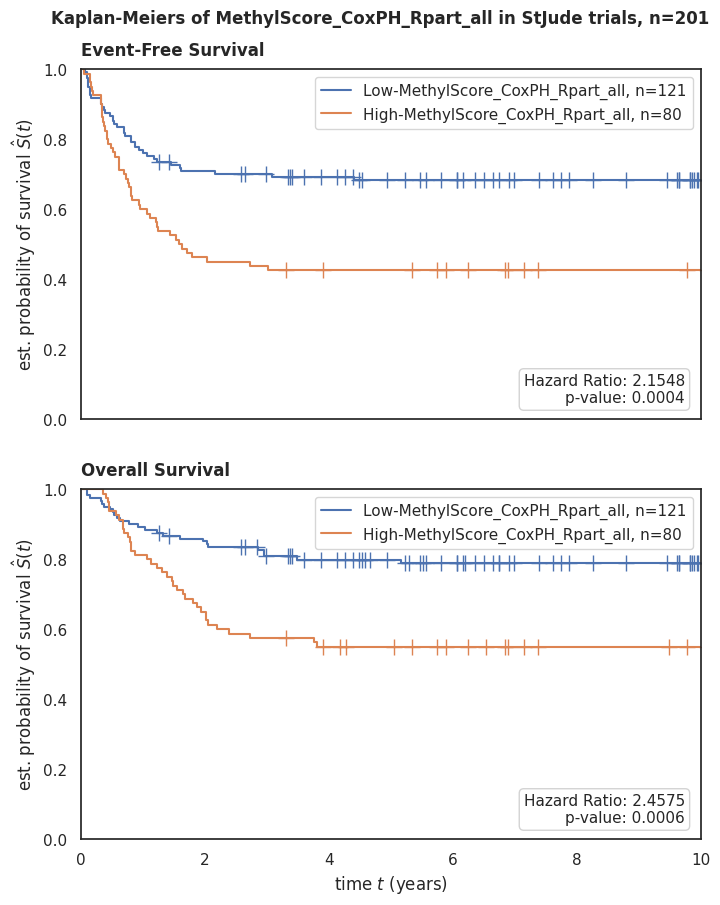
Forest Plots#
Show code cell source
draw_forest_plot(time='os.time',
event='os.evnt',
df=df_test,
trialname='StJude trials',
scorename=score_name,
save_plot=False)
draw_forest_plot(time='efs.time',
event='efs.evnt',
df=df_test,
trialname='StJude trials',
scorename=score_name,
save_plot=False)
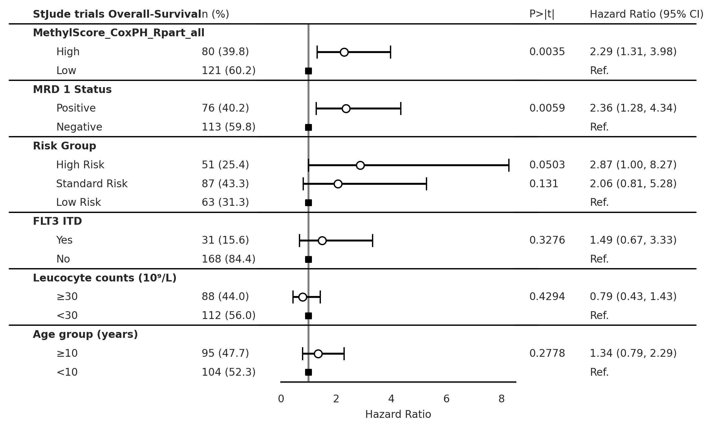
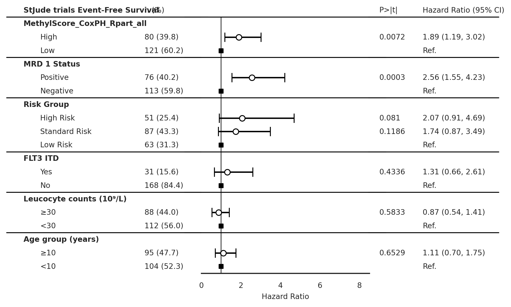
Box Plots#
Show code cell source
draw_boxplot(df=validation_clinical_data,x='Risk Group', y=score_name,
order=['High Risk', 'Standard Risk', 'Low Risk'],
trialname='StJude trials', hue=score_name + ' Categorical',
save_plot=False, figsize=None)
draw_boxplot(df=validation_clinical_data,x='MRD 1 Status', y=score_name,
order=['Positive','Negative'],
trialname='StJude trials', hue=score_name + ' Categorical',
save_plot=False, figsize=None)
draw_boxplot(df=validation_clinical_data,x='Primary Cytogenetic Code', y=score_name,
order='auto',
trialname='StJude trials', hue=score_name + ' Categorical',
save_plot=False, figsize=None)
p-value annotation legend:
ns: p <= 1.00e+00
*: 1.00e-02 < p <= 5.00e-02
**: 1.00e-03 < p <= 1.00e-02
***: 1.00e-04 < p <= 1.00e-03
****: p <= 1.00e-04
High Risk vs. Standard Risk: Kruskal-Wallis independent samples (pairwise between groups) with Bonferroni correction, P_val:3.150e-01 Stat=2.628e+00
Standard Risk vs. Low Risk: Kruskal-Wallis independent samples (pairwise between groups) with Bonferroni correction, P_val:8.551e-11 Stat=4.428e+01
High Risk vs. Low Risk: Kruskal-Wallis independent samples (pairwise between groups) with Bonferroni correction, P_val:2.836e-07 Stat=2.848e+01
p-value annotation legend:
ns: p <= 1.00e+00
*: 1.00e-02 < p <= 5.00e-02
**: 1.00e-03 < p <= 1.00e-02
***: 1.00e-04 < p <= 1.00e-03
****: p <= 1.00e-04
Positive vs. Negative: Kruskal-Wallis independent samples (pairwise between groups) with Bonferroni correction, P_val:1.003e-01 Stat=2.701e+00
Stacked Bar Plots#
Show code cell source
draw_stacked_barplot(df=validation_clinical_data,x='MRD 1 Status', y=score_name,
order=['Positive','Negative'],
trialname='StJude trials', hue=score_name + ' Categorical',
save_plot=False, figsize=None)
draw_stacked_barplot(df=validation_clinical_data,x='Risk Group', y=score_name,
order=['High Risk', 'Standard Risk', 'Low Risk'],
trialname='StJude trials', hue=score_name + ' Categorical',
save_plot=False, figsize=None, fontsize=9)
draw_stacked_barplot(df=validation_clinical_data,x='Primary Cytogenetic Code', y=score_name,
order='auto',
trialname='StJude trials', hue=score_name + ' Categorical',
save_plot=False, figsize=None, fontsize=6)
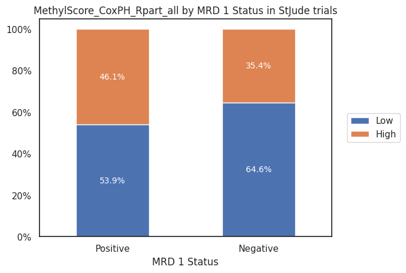
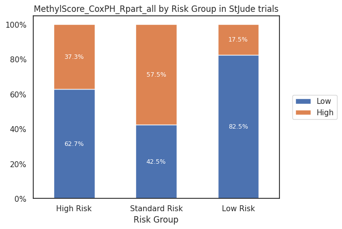
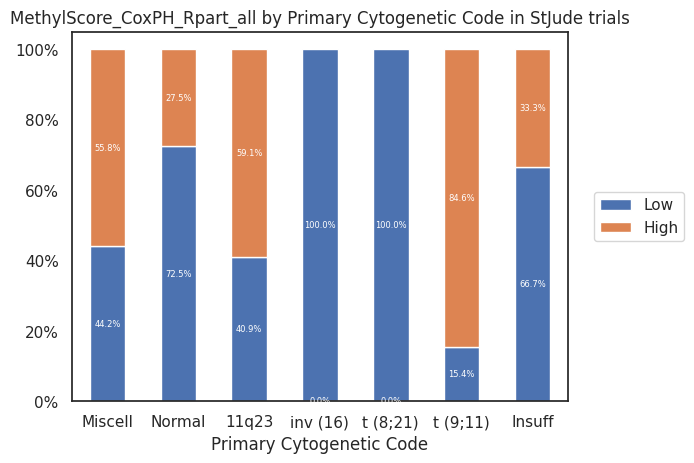
Patient Characteristics Table#
Show code cell source
from tableone import TableOne
columns = ['Age (years)','Age group (years)','Sex','Race or ethnic group',
'Hispanic or Latino ethnic group', 'MRD 1 Status',
'Leucocyte counts (10⁹/L)', 'BM Leukemic blasts (%)',
'Risk Group', 'Clinical Trial','FLT3 ITD']
validation_clinical_data['Age (years)'] = validation_clinical_data['Age (years)'].astype(float)
mytable_cog = TableOne(validation_clinical_data, columns,
overall=False, missing=True,
pval=True, pval_adjust=False,
htest_name=True,dip_test=True,
tukey_test=True, normal_test=True,
order={'FLT3 ITD':['Yes','No'],
'Race or ethnic group':['White','Black or African American','Asian'],
'MRD 1 Status': ['Positive'],
'Risk Group': ['High Risk', 'Standard Risk'],
'FLT3 ITD': ['Yes'],
'Leucocyte counts (10⁹/L)': ['≥30'],
'Age group (years)': ['≥10']},
groupby=score_name + ' Categorical')
mytable_cog.tabulate(tablefmt="html",
headers=[score_name,"",'Missing','High','Low','p-value','Statistical Test'])
| MethylScore_CoxPH_Rpart_all | Missing | High | Low | p-value | Statistical Test | |
|---|---|---|---|---|---|---|
| n | 121 | 80 | ||||
| Age (years), mean (SD) | 2 | 9.5 (5.6) | 7.6 (6.4) | 0.034 | Two Sample T-test | |
| Age group (years), n (%) | ≥10 | 2 | 61 (50.8) | 34 (43.0) | 0.351 | Chi-squared |
| <10 | 59 (49.2) | 45 (57.0) | ||||
| Sex, n (%) | Female | 0 | 46 (38.0) | 41 (51.2) | 0.088 | Chi-squared |
| Male | 75 (62.0) | 39 (48.8) | ||||
| Race or ethnic group, n (%) | White | 2 | 87 (71.9) | 56 (71.8) | 0.740 | Chi-squared (warning: expected count < 5) |
| Black or African American | 19 (15.7) | 13 (16.7) | ||||
| Asian | 1 (1.3) | |||||
| Native Hawaiian or other Pacific Islander | 1 (0.8) | 1 (1.3) | ||||
| Other | 14 (11.6) | 7 (9.0) | ||||
| Hispanic or Latino ethnic group, n (%) | Hispanic or Latino | 2 | 13 (10.8) | 12 (15.2) | 0.491 | Chi-squared |
| Not Hispanic or Latino | 107 (89.2) | 67 (84.8) | ||||
| MRD 1 Status, n (%) | Positive | 12 | 41 (36.0) | 35 (46.7) | 0.188 | Chi-squared |
| Negative | 73 (64.0) | 40 (53.3) | ||||
| Leucocyte counts (10⁹/L), n (%) | ≥30 | 1 | 54 (44.6) | 34 (43.0) | 0.940 | Chi-squared |
| <30 | 67 (55.4) | 45 (57.0) | ||||
| BM Leukemic blasts (%), mean (SD) | 16 | -35.6 (958.7) | -470.1 (2276.6) | 0.122 | Two Sample T-test | |
| Risk Group, n (%) | High Risk | 0 | 32 (26.4) | 19 (23.8) | <0.001 | Chi-squared |
| Standard Risk | 37 (30.6) | 50 (62.5) | ||||
| Low Risk | 52 (43.0) | 11 (13.8) | ||||
| Clinical Trial, n (%) | AML02 | 0 | 99 (81.8) | 60 (75.0) | 0.324 | Chi-squared |
| AML08 | 22 (18.2) | 20 (25.0) | ||||
| FLT3 ITD, n (%) | Yes | 2 | 22 (18.3) | 9 (11.4) | 0.262 | Chi-squared |
| No | 98 (81.7) | 70 (88.6) |
Save Results#
Show code cell source
# # Concat `labels_1031` and `labels_0531`
# labels_1031_0531 = pd.concat([labels_1031, labels_0531], axis=0, join='outer')
# # Filter `labels_1031_0531` to only include samples in `df`
# labels_1031_0531 = labels_1031_0531.loc[labels_1031_0531.index.isin(df.index)].sort_index()
# # Concat `df.iloc[:, -3:]` and `df_labels2.iloc[:, -3:]`
# score = df.iloc[:, -3:].join( df_labels2.iloc[:, -3:],how='inner').sort_index()
# # Concat `labels_1031_0531` and `score`
# data = score.join(labels_1031_0531, how='left').sort_index()
# # Save data
# data.to_excel(output_path + 'multivariate_cox_lasso/methylscore_cox_ph_cog_os_rpart_FM.xlsx')
Watermark#
Author: Francisco_Marchi@Lamba_Lab_UF
Python implementation: CPython
Python version : 3.8.16
IPython version : 8.12.2
pandas : 2.0.2
seaborn : 0.12.2
matplotlib : 3.7.1
tableone : 0.7.12
sklearn : 1.2.2
lifelines : 0.27.7
statannotations: 0.5.0
Compiler : GCC 11.3.0
OS : Linux
Release : 5.15.90.1-microsoft-standard-WSL2
Machine : x86_64
Processor : x86_64
CPU cores : 20
Architecture: 64bit